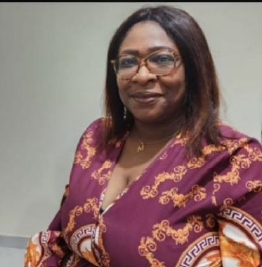
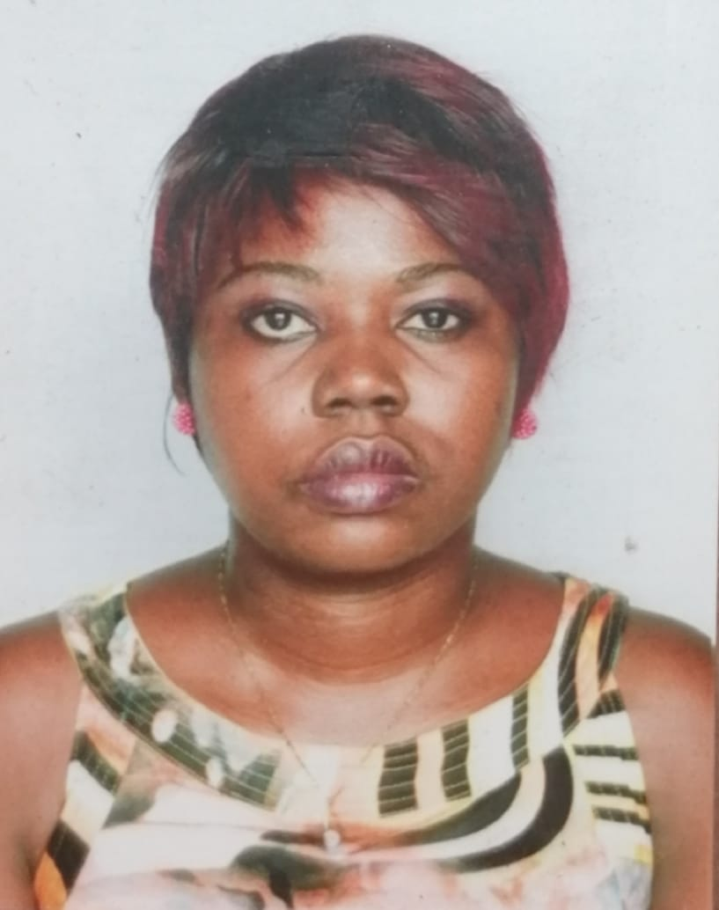
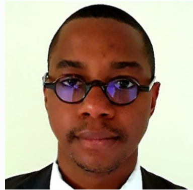
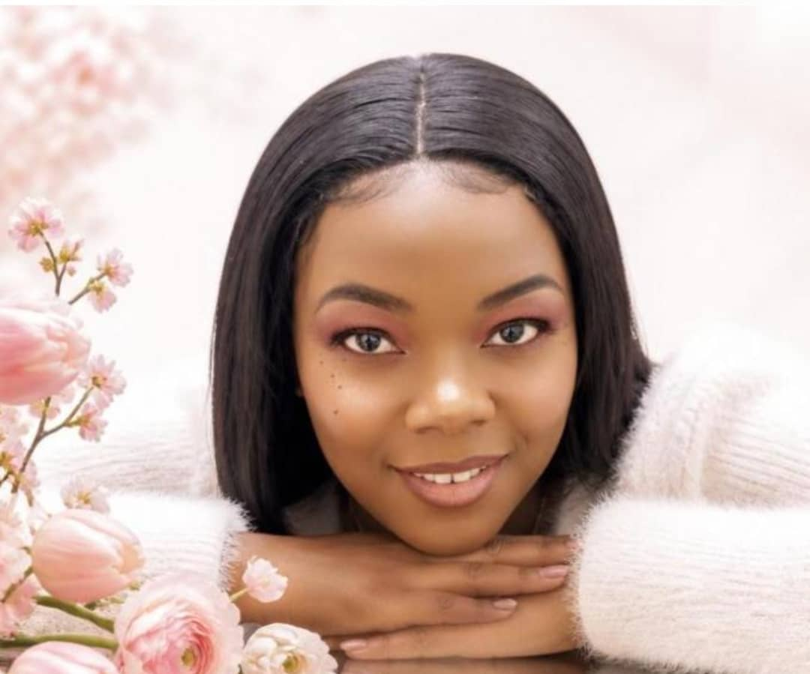
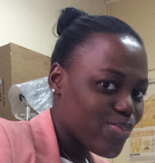
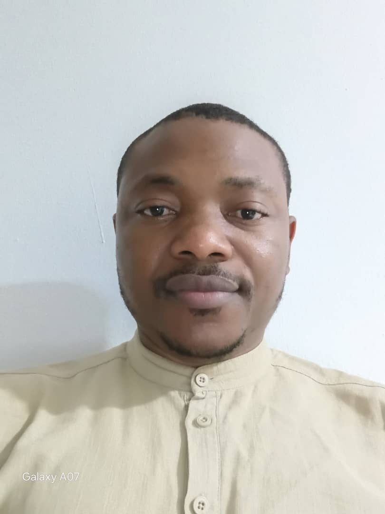
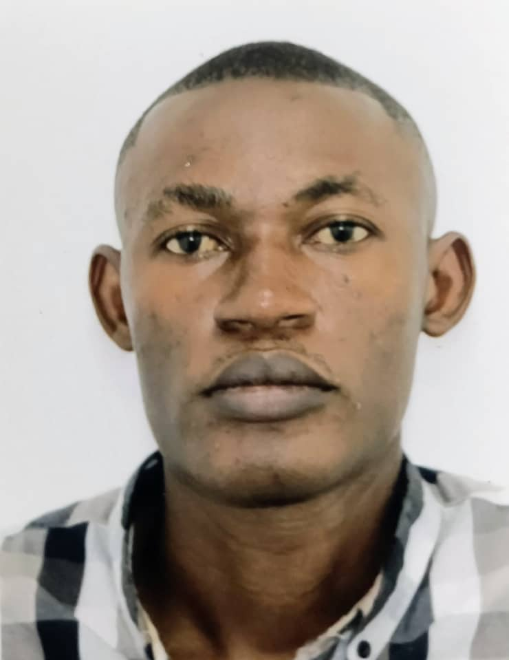
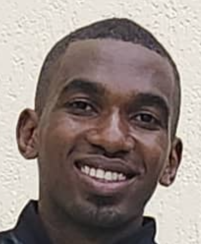
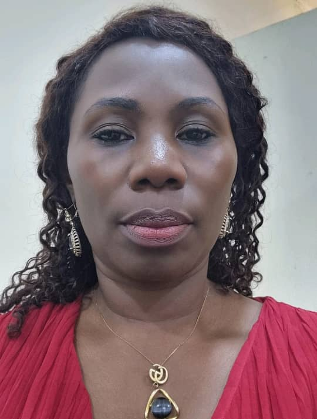

Pr Marielle Karine Bouyou-Akotet
MD-PhD · Professeure titulaire CAMES · Cheffe de Département depuis 2013
Le Département
Le DPMMT associe enseignement, soins, diagnostic et recherche en parasitologie, mycologie et médecine tropicale. Ses équipes travaillent sur les maladies parasitaires et fongiques, leur surveillance, leur diagnostic et leur prise en charge.
Le Département développe des collaborations nationales et internationales et contribue à la formation de professionnels de santé et de chercheurs en Afrique.
Découvrir nos activités →Notre équipe
Une équipe pluridisciplinaire de médecins, pharmaciens, biologistes et chercheurs engagés dans les soins, la recherche et la formation sur les maladies parasitaires, fongiques et tropicales.
MD-PhD · Professeure titulaire CAMES · Cheffe de Département depuis 2013

PhD · Professeure titulaire CAMES
MD-DEA · Professeure

Assistante de la Pr Marielle Karine Bouyou-Akotet, Cheffe du Département de Parasitologie-Mycologie-Médecine Tropicale à la Faculté de Médecine, Université des Sciences de la Santé.
MD-MSc · Maître-Assistant CAMES en Parasitologie-Mycologie

PhD · Maître-Assistant CAMES en Immuno-microbiologie
PhD · Maître-Assistant CAMES en Parasitologie

PhD · Maître-Assistante CAMES en Entomologie-Parasitologie

MD-PhD · Biologiste médicale · Maître-Assistante CAMES en Parasitologie-Mycologie

PharmD-MSc · Biologiste médical · Maître-Assistant CAMES en Parasitologie-Mycologie
PharmD-MSc · Biologiste médicale · Maître-Assistante CAMES en Parasitologie-Mycologie
PhD · Maître-Assistant CAMES en Immuno-microbiologie

MD-MSc

PhD
MD
PhD
PhD

PhD
Maître-Assistante
Contact
Pr Marielle Karine Bouyou-AkotetCheffe du Département de Parasitologie-Mycologie-Médecine Tropicale
DPMMT
Département de Parasitologie-Mycologie-Médecine Tropicale
Université des Sciences de la Santé
Libreville – Gabon